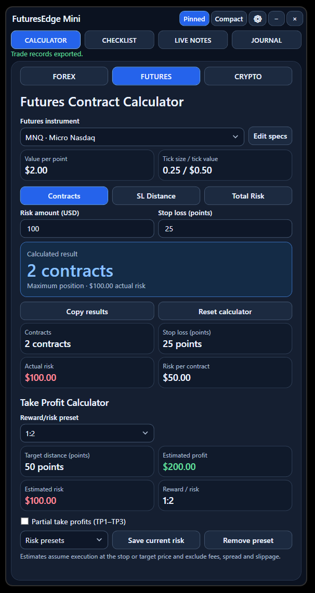
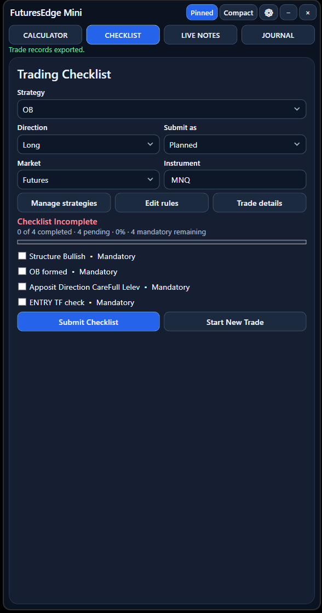
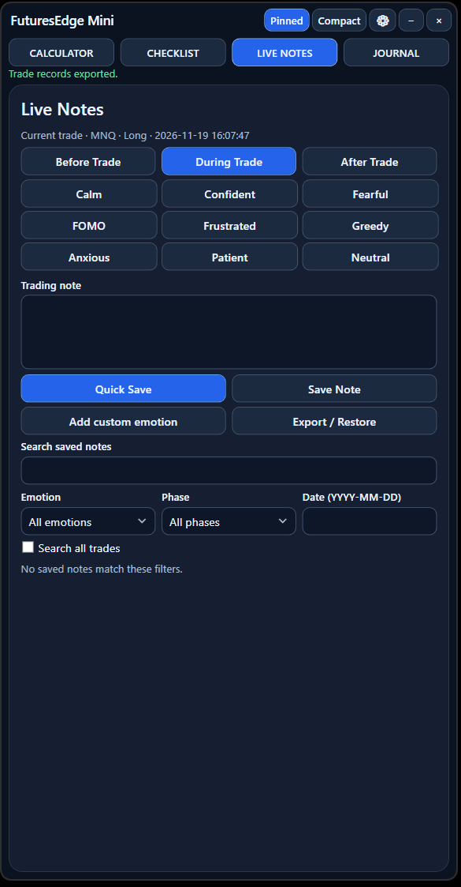
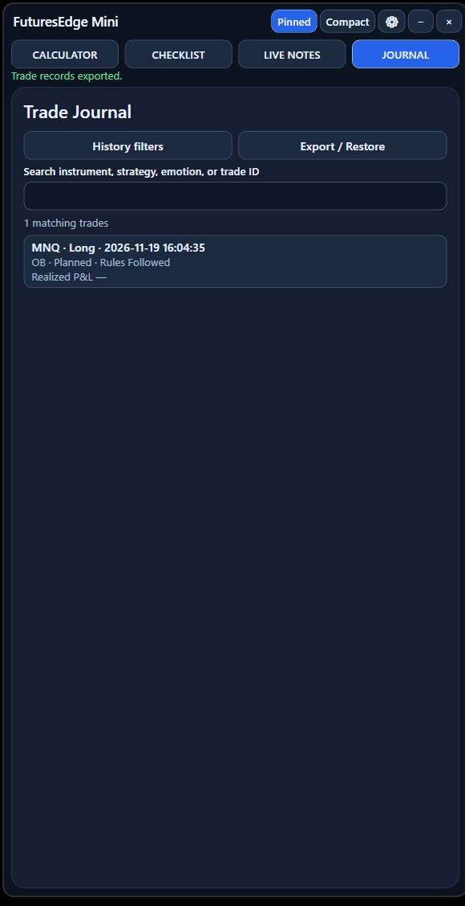

01 / CALCULATOR
Calculate risk
Forex, Futures and linear USDT Crypto position sizing; stop-loss, risk and partial take-profit planning.
Available for Full Acquisition
A compact Windows trading companion combining multi-market position sizing, custom strategy checklists, live emotion notes, and automatic trade journaling in one workflow.
Designed to reduce the friction between planning a trade, checking discipline, recording emotions, and reviewing the outcome.
Forex, Futures and linear USDT Crypto position sizing; stop-loss, risk and partial take-profit planning.
Custom strategies, mandatory and optional rules, long/short applicability, and checklist submission.
Before, during and after-trade notes; emotion tags and timestamped quick-save logging.
Submitted checklist snapshots, linked notes, trade status and actual realized outcomes.
Captured from FuturesEdge Mini 1.1.0. Select an image to inspect it at full size.

Position sizing and target planning

Custom rules and submission

Trading emotions and notes

Submitted trade history
See the Windows application in use.
CapitalGuildX is offering 100% ownership of FuturesEdge Mini. The proposed transfer may include the following, subject to verification and a definitive agreement.
Any third-party rights are subject to verification and any required consents.
Discuss the proposed transfer, request technical information for due diligence, or arrange a demonstration. Acquisition terms are discussed privately.
Inquire About Full Acquisition